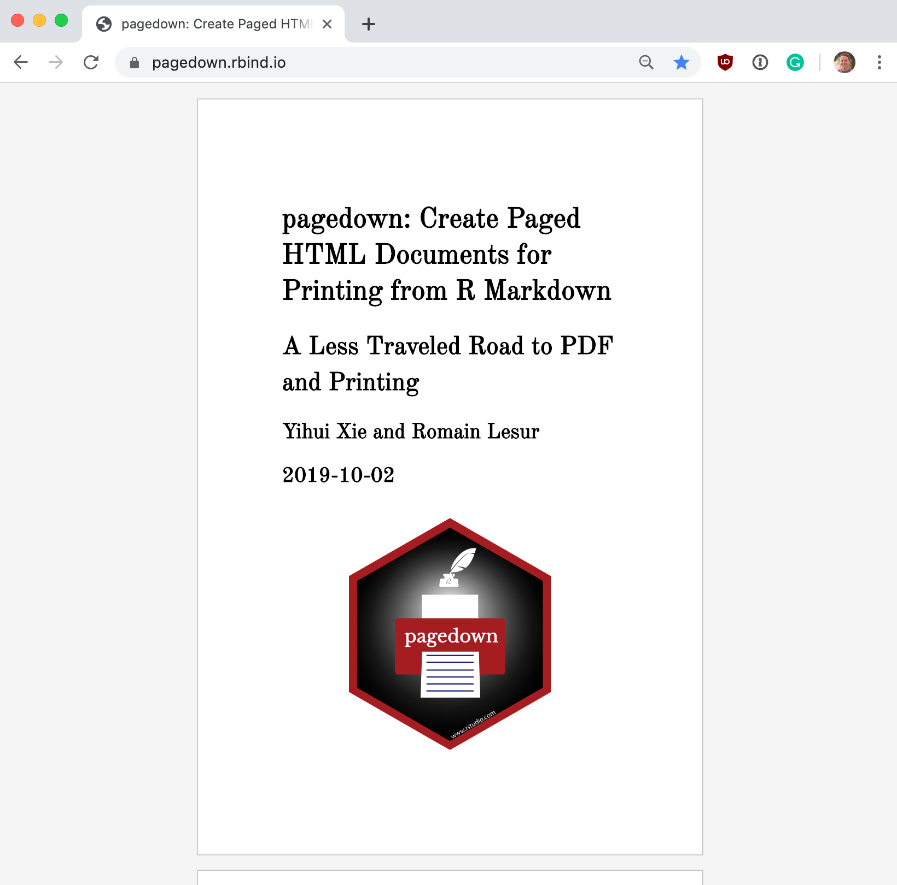
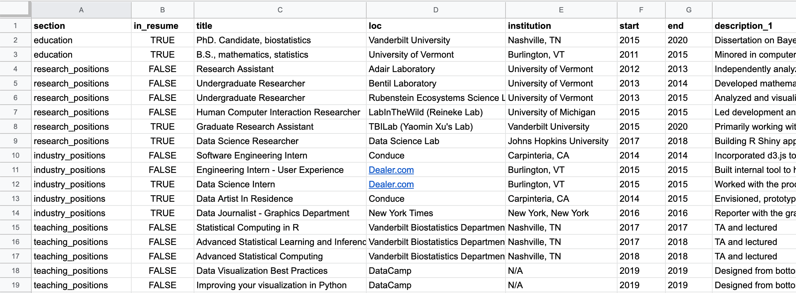
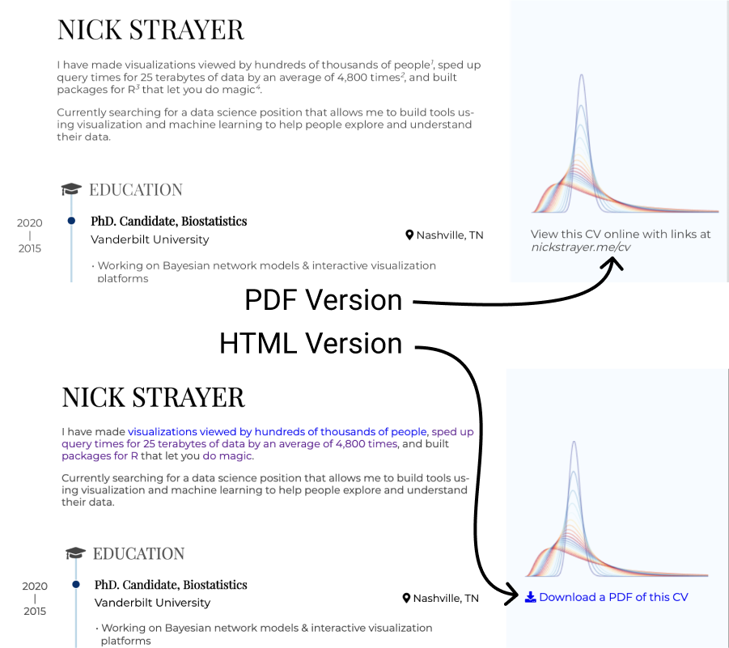
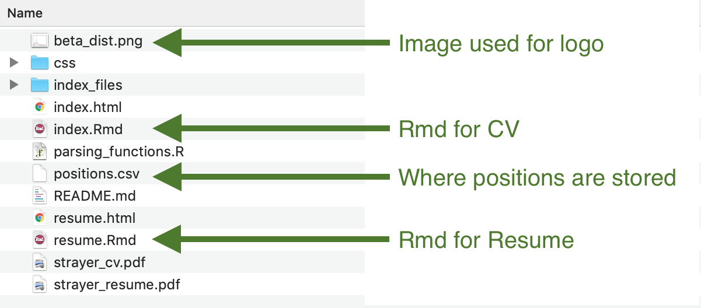

A confession: I always put off updating my CV and Resume. Every time I go to update it, I end up deciding that I don’t like the style and then start from scratch. Upon starting over, I need to manually extract all relevant information for each position and conform it to my new layout. I don’t have a long CV yet, but even now, this takes much too long.
A programmer would look at a problem like this and say, “any scenario where I repeat the same actions I should write a script.” Since I self-identify as a “data scientist” - an unholy mashup of programmer and statistician - I figured I could write a script to do the formatting and store all my information in… spreadsheets! In a hurry and just want to know how you can build your CV or resume this way? Skip to here
The goal of this post is to walk you through the techniques I used and help you do the same.
First, let’s talk about the framework that allows this.
RMarkdown & Pagedown
RMarkdown is just one of a number of tools that allow you to use the literate programming paradigm, invented/popularized by the computer scientist Donald Knuth. If you are familiar with the world of R programming, you will likely have heard of Rmarkdown. RMarkdown is a file-format/package that takes a standard markdown document and allows the code chunks within to be executed and their outputs recorded.
Pagedown is a new R package that formats the final output from your Rmarkdown into paginated HTML. I had the pleasure of sitting in the very back of a packed conference hall at RStudio::conf 2019 when Yihui Xie introduced Pagedown. You can watch the presentation from a much better vantage point than I had on the RStudioConf presentations site. This HTML can then be easily turned into a PDF by using the print function in your browser. Previously, if you wanted to generate a PDF from RMarkdown, you had two options. You could just print unpaginated HTML (ugly), or you could compile to Latex, which meant you losing out on a lot of niceties that are provided by CSS formatting. Personally, I know a lot more about formatting with CSS than I do with Latex, so this was a perfect fit for me.
It’s beautiful 
Included in the Pagedown package is a template called ‘Resume.’ The result of the un-touched resume template:  This template generates a beautiful resume with the main content section on the left and a sidebar for supplementary information on the right. The main section displays your positions in an elegant timeline format.
This template generates a beautiful resume with the main content section on the left and a sidebar for supplementary information on the right. The main section displays your positions in an elegant timeline format.
To add an entry for a position, you write markdown like so…
### PhD. Candidate, Biostatistics
Vanderbilt University
Nashville, TN
2011-2015
- Working on Bayesian network models & interactive visualization platforms
- University Graduate Fellow
results=‘asis’
You can set this options for all chunks with knitr::opts_chunk$set(results=‘asis’) in the first chunk of the RMD.
In RMarkdown, the output from code chunks is typically used to print tables or plots. However, by using the chunk command results = 'asis', we can also generate text that looks the same to pandoc as if we typed it ourselves.
This means that we can use R to write our document for us. I have been doing this for a while with my personal website. My ‘projects’ section is stored in a JSON file that gets rendered to HTML by some simple R functions. The trouble is, how do we write the code do to this?
Held together by glue
Up until recently, if you wanted to generate long text output with R from multiple variables, you had to use the paste function. Technically the sprintf() function was an option as well, but that was just annoying. As its name implies, paste() paste’s its arguments together into a character string. It’s great if you want to join two or so values together, but when you start writing longer, more complicated output, it gets a bit hairy.
Making a CV/ Resume is something I always put off. But thanks to the {pagedown}, {purrr}, and {glue} packages I can store my positions in lists and build the output programatically. This way I tell myself I'm doing 'data-aggregation' and 'presentation' for my career. #rstats pic.twitter.com/VDgMAqWmQ8
— Nick Strayer (@NicholasStrayer) September 26, 2019
This sticking point was one of the inspirations for the package glue, by the brilliant Jim Hester. Glue works by allowing you to write your output string in a natural template format. You tell R where you want each variable placed by writing the variable name wrapped in curly braces in the desired position in your template. Then when glue() evaluates, it pastes the values of each variable into its respective curly-braced location. You can change what character is used to wrap variables with the arguments .open and .close. In case you want a curly brace in your output.
This means we can write the markdown for a resume position by encoding all the necessary details about the position in variables and passing those variables to glue()…
title <- "PhD. Candidate, Biostatistics"
loc <- "Nashville, TN"
institution <- "Vanderbilt University"
timeline <- "2011-2015"
description_bullets <- "- Working on Bayesian network models & interactive visualization platforms
- University Graduate Fellow
"
glue(
"### {title}",
"\n\n", # Add two new lines
"{loc}",
"\n\n",
"{institution}",
"\n\n",
"{timeline}",
"\n\n",
"{description_bullets}"
)### PhD. Candidate, Biostatistics
Nashville, TN
Vanderbilt University
2011-2015
- Working on Bayesian network models & interactive visualization platforms
- University Graduate FellowBring in the spreadsheets!
So we have a pagedown template, and we know how to turn variables into an entry. Now we need to decide how to store those variables for all the positions.
A little secret: however, much data scientists love to talk about database systems, scraping frameworks, or distributed file stores, we still all wish everything came in CSVs. I decided to do one final copy and paste of my positions into a CSV.

For each ‘position,’ I had columns describing the primary details: title, loc(ation), institution, start (date), and end (date).
I also added a column for the section the entry fell into. For me this consists of 'education', 'research_positions', 'industry_positions', 'data_science_writings', etc..
Last, I needed a way to store the description for the positions. This was a tiny bit tricky as I didn’t always want the same number of description bullets. Some positions just get one, some may have three…
Enter tidyr::pivot_longer()
To deal with this, I reached into the shiny new tidyr V1 functions toolbox for the function pivot_longer.
🤦 ♀️ this worked much better in my imagination…
— Mara Averick (@dataandme) September 20, 2019
😬tidyr::pivot_longer()-ing
/* for actual good #rstats animations, see @grrrck's tidyexplain repo https://t.co/CL9IEuUlXe */ pic.twitter.com/ohgGXlyCOA
I made multiple columns for description and creatively titled them description_1, description_2, and description_3. If I had an entry with four description bullet points, I would have just added a description_4, and so on.I filled in the columns for each entry until all bullets had been pasted and then left the remaining columns empty.
For the rest of this post, I will use the actual position dataframe that my CV is using to demonstrate, it’s loaded currently as positions.
# Helper function to print table without overwhelming output
print_head <- function(data, size = 5){
head(data, size) %>%
knitr::kable()
}
# Add an id to keep track of each entry
position_data <- positions %>%
mutate(id = 1:n())
position_data %>%
select(
id,
description_1,
description_2,
description_3 ) %>%
print_head()| id | description_1 | description_2 | description_3 |
|---|---|---|---|
| 1 | Working on Bayesian network models & interactive visualization platforms | University Graduate Fellow | NA |
| 2 | Thesis: An agent based model of Diel Vertical Migration patterns of Mysis diluviana | NA | NA |
| 3 | Independently analyzed and constructed statistical models for large data sets pertaining to carbon decomposition rates. | NA | NA |
| 4 | Developed mathematical model to predict the transport of sulfur through the environment with applications in waste cleanup. | NA | NA |
| 5 | Analyzed and visualized data for CATOS fish tracking project. | Head of data mining project to establish temporal trends in population densities of Mysis diluviana (Mysis). | Ran project to mathematically model the migration patterns of Mysis (honors thesis project.) |
Using pivot_longer, I targeted the description columns using tidyr::starts_with('description') and transformed each individual position row into a series of rows with each description stored as 'description' and its value as 'description_num'. All the other columns were simply repeated.
pivoted_positions <- position_data %>%
pivot_longer(
starts_with('description'),
names_to = 'description_num',
values_to = 'description',
values_drop_na = TRUE
)
pivoted_positions %>%
select(
title,
description_num,
description) %>%
print_head()| title | description_num | description |
|---|---|---|
| PhD. Candidate, Biostatistics | description_1 | Working on Bayesian network models & interactive visualization platforms |
| PhD. Candidate, Biostatistics | description_2 | University Graduate Fellow |
| B.S., Mathematics, Statistics (minor C.S.) | description_1 | Thesis: An agent based model of Diel Vertical Migration patterns of Mysis diluviana |
| Research Assistant | description_1 | Independently analyzed and constructed statistical models for large data sets pertaining to carbon decomposition rates. |
| Undergraduate Researcher | description_1 | Developed mathematical model to predict the transport of sulfur through the environment with applications in waste cleanup. |
Once this was completed, I got back to a single row per entry by using group_by() and mutate() to generate a list column that contained every description for a given position. Finally, I just kept the first row for each entry. I am almost sure there’s a more elegant way to do this whole step, but I couldn’t figure it out. Know a better way? Please let me know!
pos_w_descrip_list <- pivoted_positions %>%
group_by(id) %>%
# Wrap all descriptions into a list column
mutate(descriptions = list(description) ) %>%
ungroup() %>%
# Only keep first row of each expanded position rows
filter(description_num == 'description_1') %>%
# We don't need these columns any more
select(-description_num, -description)
pos_w_descrip_list %>%
select(id, title, descriptions) %>%
print_head()| id | title | descriptions |
|---|---|---|
| 1 | PhD. Candidate, Biostatistics | Working on Bayesian network models & interactive visualization platforms, University Graduate Fellow |
| 2 | B.S., Mathematics, Statistics (minor C.S.) | Thesis: An agent based model of Diel Vertical Migration patterns of Mysis diluviana |
| 3 | Research Assistant | Independently analyzed and constructed statistical models for large data sets pertaining to carbon decomposition rates. |
| 4 | Undergraduate Researcher | Developed mathematical model to predict the transport of sulfur through the environment with applications in waste cleanup. |
| 5 | Undergraduate Researcher | Analyzed and visualized data for CATOS fish tracking project. , Head of data mining project to establish temporal trends in population densities of Mysis diluviana (Mysis)., Ran project to mathematically model the migration patterns of Mysis (honors thesis project.) |
Now I had the data in a nice tibble with all the information I need for a given position in the row in a format I can run through glue.
glue_data to the rescue
glue::glue_data() is a sister-function to glue::glue() that allows you to use a glue template in a dplyr pipe. You write out the column name in your curly braces, and glue runs row-by-row through your tibble, building a string for each.
Before I could do this, I needed to take care of a few things. One was the dates. Some positions didn’t have both start and end date, or they were less than a year-long. In these scenarios, I just wanted to print a single date rather than a range. To do this, I used a mutate and an ifelse to build a timeline column.
# If missing start or start is same as end
# date, just use end date. otw build range
positions_w_timeline <- pos_w_descrip_list %>%
mutate(
timeline = ifelse(
is.na(start) | start == end,
end,
glue('{end} - {start}')
)
)
positions_w_timeline %>%
select(title, timeline) %>%
print_head(8)| title | timeline |
|---|---|
| PhD. Candidate, Biostatistics | 2020 - 2015 |
| B.S., Mathematics, Statistics (minor C.S.) | 2015 - 2011 |
| Research Assistant | 2013 - 2012 |
| Undergraduate Researcher | 2014 - 2013 |
| Undergraduate Researcher | 2015 - 2013 |
| Human Computer Interaction Researcher | 2015 |
| Graduate Research Assistant | 2020 - 2015 |
| Data Science Researcher | 2018 - 2017 |
Second, I needed to collapse my list column of descriptions into the one-bullet-per-line format that the Pagedown resume template uses. I used purrr::map_chr and the paste function.
Every time I write a quoted dash character, I always feel like it’s a non-plussed face that is judging me: ‘-’
positions_collapsed_bullets <- positions_w_timeline %>%
mutate(
description_bullets = map_chr(
descriptions,
~paste('-', ., collapse = '\n')),
)
positions_collapsed_bullets %>%
pull(description_bullets) %>%
head(3)[1] "- Working on Bayesian network models & interactive visualization platforms\n- University Graduate Fellow"
[2] "- Thesis: An agent based model of Diel Vertical Migration patterns of Mysis diluviana"
[3] "- Independently analyzed and constructed statistical models for large data sets pertaining to carbon decomposition rates."Last, the template will ignore parts of an entry if it is passed as 'N/A'. Unfortunately, printing an na value in R returns 'na', so I used mutate_all() to turn every missing value in the dataframe into the string 'N/A'.
positions_no_na <- positions_collapsed_bullets %>%
mutate_all(~ifelse(is.na(.), 'N/A', .))After all that, we just plop our glue template into glue_data and pipe in our newly modified positions dataframe.
positions_no_na %>%
head(2) %>%
glue_data(
"### {title}",
"\n\n",
"{loc}",
"\n\n",
"{institution}",
"\n\n",
"{timeline}",
"\n\n",
"{description_bullets}",
"\n\n\n"
)### PhD. Candidate, Biostatistics
Vanderbilt University
Nashville, TN
2020 - 2015
- Working on Bayesian network models & interactive visualization platforms
- University Graduate Fellow
### B.S., Mathematics, Statistics (minor C.S.)
University of Vermont
Burlington, VT
2015 - 2011
- Thesis: An agent based model of Diel Vertical Migration patterns of Mysis diluvianaI wrapped all this code in a function that takes a position’s dataframe and the name of the section I want it to print and then runs all the transformations above and prints.
Here’s what the final function looks like. You may notice a function strip_links_from_cols() in this that I haven’t mentioned yet. We will get to that!
Now I can just go through and draft my resume by dropping in an R chunk with output asis. If I end up wanting to change the layout in the future, I just need to rearrange my glue template.
Building a resume
I used this new-layout flexibility almost immediately. As some people doing hiring may not want - or have time - to scan through multiple pages of a CV, I built a template for a single-page resume. All this took was adding a single column to the spreadsheet that contained a boolean indicating if I wanted the position in my resume or not.
The fact I had an extra curly brace to start {pagedown} in this tweet has caused me large quantities of distress.
Added a 1 page resume to my #rstats {{pagedown}-built CV repo. To filter what gets into resume I just modify a column in my positions spreadsheet. No more starting from scratch when I want a new template!
— Nick Strayer (@NicholasStrayer) September 30, 2019
gh: https://t.co/NYJNg7daj7 pic.twitter.com/J0JQJz5Xpb
Dealing with links
One of the beautiful things about HTML is that you can interact with it. The most common type of interaction is clicking on links. In my positions, I liberally added links to things for people to click on. This works great when people view my CV on the web, but what if someone wants to print it out and read it in real life? After all, pagedown is paginated for precisely that purpose.
In the standard pagedown format, there is a YAML header option (links-to-footnotes: true) For all the available options, check out the excellent docs for pagedown. that replaces every link with a footnote and then adds a superscript to the link text guiding the reader to the correct reference. This is a great solution. Unfortunately, the option isn’t available for the resume template.
There is a pandoc processing function for parsing links that is passed to the standard paged format but is not passed to the Resume template. I tried to add it by modifying the Pagedown package itself could never get it to respect the sidebar layout. If I had more time, I would like to fix this at the package-level to make it more elegant.
Since I liked the resume template, I decided to roll my own solution.
I wrote a function sanitize_links() that takes a chunk of text as input and identifies the markdown links in it with a regular expression. The function then replaces the markdown link with plain text and adds a sequential superscript. Each link it replaces is placed in a bookkeeping array: links. At the very end of the document, links is printed out as a numbered list.
I just found out you can write comments in your regular expressions, and it makes me very happy.
library(stringr)
# Regex to locate links in text
find_link <- regex("
\\[ # Grab opening square bracket
.+? # Find smallest internal text as possible
\\] # Closing square bracket
\\( # Opening parenthesis
.+? # Link text, again as small as possible
\\) # Closing parenthesis
",
comments = TRUE)
# Function that removes links from text and replaces them with superscripts that are
# referenced in an end-of-document list.
sanitize_links <- function(text){
str_extract_all(text, find_link) %>%
pluck(1) %>%
walk(function(link_from_text){
title <- link_from_text %>%
str_extract('\\[.+\\]') %>%
str_remove_all('\\[|\\]')
link <- link_from_text %>%
str_extract('\\(.+\\)') %>%
str_remove_all('\\(|\\)')
# add link to links array
links <<- c(links, link)
# Build replacement text
new_text <- glue('{title}<sup>{length(links)}</sup>')
# Replace text
text <<- text %>%
str_replace(fixed(link_from_text), new_text)
})
text
}To demonstrate how this works, let’s ‘sanitize’ some sample text with two links in it.
links <- c()
text_w_links <- "This is some [text](www.with_links.com). It would be nice if it was just [plain](www.and_without_links.com)."
text_wo_links <- text_w_links %>% sanitize_links()
text_wo_links %>% print()[1] "This is some text<sup>1</sup>. It would be nice if it was just plain<sup>2</sup>."links %>% print()[1] "www.with_links.com" "www.and_without_links.com"Notice the use of the <<- assignment for links in the function. Usually, I am very against mutating variables, especially out of scope, but this seemed like an acceptable use of the technique since its just a static text document and the code isn’t running live somewhere. This is because by default, the link array that the function is appending to will only get modified within the function scope, and thus we won’t have the output for later. <<- lets R know that it should modify the variable reference outside of the current scope.
I wrapped sanitize_links() in another function that returns the positions tibble with the links all sanitized in order of their appearance on the page.
# Take entire positions section and removes the links
strip_links_from_cols <- function(data, cols_to_strip){
for(i in 1:nrow(data)){
# Remove by position so numbers stay together
for(col in cols_to_strip){
data[i, col] <- sanitize_links(data[i, col])
}
}
# Give back now sanitized position data
data
}I wrapped links in the free text section in sanitize_links() so they would get stripped as well. This means that the links sequentially decrease as the page goes down. Is this actually important? Probably not.
Now when I want to generate the CV for printing to PDF, I just flip a boolean PDF_EXPORT at the top of the RMD, and all the links are stripped out.
sanitize_links <- function(text){
# Only do stuff to text if we're exporting PDF
if(PDF_EXPORT){
...
}
text
}Context-aware content
I took advantage of this PDF export value to add a conditional text entry at the top of the document. This tells readers of the PDF version that there is an HTML version and gives readers of the HTML version a link to download the PDF version.
if(PDF_EXPORT){
cat("View this CV online with links at _nickstrayer.me/cv_")
} else {
cat("[<i class='fas fa-download'></i> Download a PDF of this CV](https://github.com/nstrayer/cv/raw/master/strayer_cv.pdf)")
}
Customizing the CSS
Previously we focused on how to get the positions in, but one of the more compelling aspects of a CV is how you can stand out by making it unique. Because of this, I didn’t want to just use the default (but beautiful) resume template; so I modified the CSS using the CSS override option available in RMarkdown.
This involves just writing your new styles in a .css file somewhere in the same directory as your markdown and then referencing it in the YAML header:
I left in the original ‘resume’ CSS file so I didn’t lose all the niceness it provides and my styles just stack on top of it.
---
title: "Nick Strayer's CV"
output:
pagedown::html_resume:
css: ['css/styles.css', 'resume']
---For instance, I decided to change the fonts to a pair I really love from Google Fonts…
@import url("https://fonts.googleapis.com/css?family=Montserrat|Playfair+Display&display=swap");
/* Main text is monserrat*/
body {
font-family: "Montserrat", sans-serif;
font-weight: 300;
line-height: 1.3;
color: #444;
}
/* Give headers playfair font */
h1,
h2,
h3 {
font-family: "Playfair Display", serif;
color: #000;
}This blog is not one you’re probably reading to get CSS tips, so I will not go into the specifics. If you are interested in learning more about CSS I really like Kevin Powell’s youtube channel. It transformed the way I view and write CSS for the better. I mainly went in and made the sidebar a bit smaller and changed the way some of the lists were formatted. If you want to see all the CSS I used for my CV check out the main style file on github. The singe-paged resume also has an additional set of styles that stack on top of both the default style sheet and my CV styles.
Want to build your CV this way?
Okay, we can dispense with the formalities. The quickest and easiest way to build your CV this way is to:
- Copy the files from my CV
- Replace the positions data with your own data
- Personalize the text main document text…
Copy the files
If you are familiar with git/ github you can fork the repo, if you just want the files, here’s a link to download a zip of all the files needed.

Replace position data
The main file you need to change is positions.csv. Once you have all your positions in then go into the main index.Rmd if you’re making a CV or resume.Rmd if you’re making a resume.
Then fill in your sections. If my sections don’t fit your profile (likely) you can add a new section in positions.csv (, say 'serious_workthings'.) You can include this new section by placing the following in the document.
A huge thanks to Mark Scheuerell, who showed me how to properly render meta-rmarkdown!
Serious Work Things {data-icon=book}
--------------------------------------------------------------------------------
```{r, results = 'asis'}
position_data %>% print_section('serious_workthings')
```Personalize text
Last, change the personalized text for skills and header text etc..
I didn’t put everything into a spreadsheet.
Finally, knit your results by pressing ‘Knit’ at the top of the .Rmd in RStudio. Not using RStudio? Then just run rmarkdown::render(‘index.Rmd’).
The giants upon who’s shoulders I stand
I want to emphasise that I have done nothing particularly special here. Everything is possible because of a series of amazing contributions by the R community.
In particular for this you should thank:
- Yihui Xie: For
markdown, andpagedown(, andblogdownthat I am using to write this blog post.) - Romain Lesur: For
pagedown - Mara Averick: For somehow keeping on top of every new R package and giving demos on how to use them
- Jim Hester: For glue
- Hadley Wickham and Lionel Henry: for
purrr - Many more that I have neglected to mention.
Also, because I have no original thoughts. The ‘data-driven CV’ concept has been done before by others. For instance:
- Lucy D’Agostino-McGowan (aka the better half of this blog) has a data-driven academic website.
- The Vitae package by Mitchell O’Hara-Wild and Rob J Hyndman.
Questions
This was a rather high-level skim over the process that left out some details. If any of those details I ommited was more important than I realized and you’re stuck. Don’t hesitate to leave a comment here, message me on Twitter, or email me.